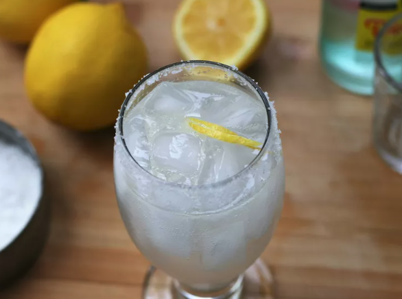

Chilton Cocktail

Description
The Chilton cocktail, said to have originated in Lubbock, Texas, is a tangy and refreshing summer cocktail, perfect for those who don't like overly sweet drinks. Adjust the lemon and sparkling water to suit your taste.
Ingredients
- 1 tablespoon coarse salt, or as needed
- 1 lemon wedge
- 1 ½ fluid ounces freshly-squeezed lemon juice
- 1 ½ fluid ounces vodka
- 4 fluid ounces sparkling mineral water, or as needed
Steps
- Sprinkle salt onto a plate. Moisten the rim of a highball glass with lemon wedge. Press the moistened rim into salt. Fill the glass with ice.
- Pour lemon juice and vodka over ice and gently stir. Top with sparkling water and serve with lemon wedge.